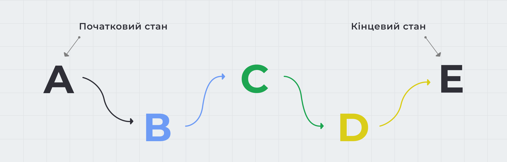

Як і переходи, анімація надає веб-сторінкам динамічність, але, на відміну від переходів, анімації не потрібен обов'язковий ініціатор (подія), її можна повторити нескінченну кількість разів, і між початковим і кінцевим станами може бути будь-яка кількість проміжних станів.
Анімація оголошується директивою @keyframes, яка дозволяє описати набір кадрів (frames, станів) анімації, яких повинно бути як мінімум два (початковий і кінцевий).
/* Ім'я повинно бути описовим, тобто, що це за анімація. */
@keyframes ім'яАнімації {
/* Тут будуть описуватися кадри */
}
Кадри визначають, у який момент часу змінюються анімовані властивості, і описуються ключовими словами from (псевдонім 0%) і to (псевдонім 100%) або, найчастіше, у вигляді відсотків в діапазоні 0%-100%, оскільки відсотки дозволяють вказати довільне значення.
/* Ім'я повинно бути описовим, тобто, що це за анімація. */
@keyframes ім'яАнімації {
0% {
/* Властивості для зміни */
}
/* Довільна кількість проміжних кадрів */
100% {
/* Властивості для зміни */
}
}
Корисно:
В анімації не вказується час або елемент, до якого вона буде
застосовуватися, це означає, що одну і ту саму анімацію можна
використовувати повторно для різних елементів.
Оголосимо анімацію для зміни кольору фону елемента в трьох точках: 0%, 50% і 100%.
@keyframes changeBgColor {
0% {
background-color: teal;
}
50% {
background-color: orange;
}
100% {
background-color: deepskyblue;
}
}
Щоб використовувати вже оголошену анімацію, потрібно вказати її ім'я як значення для властивості animation-name.
.box {
animation-name: changeBgColor;
}
Анімацію можна додати до селектора, тоді вона буде застосована відразу під час завантаження сторінки. Так само можна застосувати анімацію на підставі події, наприклад ховеру або фокусу, використовуючи відповідні псевдокласи.
. box {
/* Базові стилі елемента */
}
/* Додаємо анімацію по ховеру */
.box:hover {
animation-name: changeBgColor;
}
Встановлює тривалість анімації - час, за який будуть пройдені всі кадри. Задається в секундах або мілісекундах. Якщо не поставити тривалість, анімація буде миттєвою.
.box {
animation-name: changeBgColor;
animation-duration: 3000ms;
}
За замовчуванням анімація відбувається один раз і фінальні значення анімованих властивостей не зберігаються, натомість елемент повертається до свого вихідного стану.
See the Pen lesson-10-animation-duration by goit-academy (@goit-academy) on CodePen.
Встановлює функцію розподілу часу для анімації, значення аналогічні transition-timing-function в CSS-переходах.
.box {
animation-name: changeBgColor;
animation-duration: 3000ms;
animation-timing-function: linear;
}
Встановлює затримку перед початком анімації в секундах або мілісекундах.
.box {
animation-name: changeBgColor;
animation-duration: 3000ms;
animation-timing-function: linear;
animation-delay: 1000ms;
}
Встановлює кількість повних повторень анімації.
.box {
animation-name: changeBgColor;
animation-duration: 3000ms;
animation-timing-function: linear;
animation-iteration-count: 5;
}
Значення може бути цілим додатним числом або ключовим словом infinite - це зробить анімацію нескінченною.
See the Pen lesson-10-animation-iteration-count by goit-academy (@goit-academy) on CodePen.
Контролює напрямок відтворення анімації - від початкового до кінцевого кадру, навпаки від кінцевого кадру до початкового, або, можливо необхідно, щоб порядок чергувався на кожному повторенні.
.box {
animation-name: changeBgColor;
animation-duration: 3000ms;
animation-timing-function: linear;
animation-iteration-count: infinite;
animation-direction: alternate;
}
See the Pen lssson-10-animation-direction by goit-academy (@goit-academy) on CodePen.
Визначає, що відбувається зі стилями елемента до початку анімації і після її завершення. Тобто дозволяє вказати, чи повинні стилі анімації застосовуватися до елементу поза анімацією.
animation-fill-mode: none | forwards | backwards | both
See the Pen lssson-10-animation-fill-mode by goit-academy (@goit-academy) on CodePen.
Дозволяє призупинити відтворення анімації. За замовчуванням встановлено значення running. Якщо встановити значення paused, наприклад при :hover, анімація буде припинена, доки курсор миші знаходиться над елементом.
See the Pen lesson-10-animation-play-state by goit-academy (@goit-academy) on CodePen.
Збірна властивість дозволяє коротше записати властивості анімації.
animation: [name] [duration] [timing-function] [delay] [iteration-count] [direction] [fill-mode] [play-state]
Значення необов'язкових властивостей можна пропустити або поміняти місцями. Виняток становлять властивості duration і delay - значення тривалості анімації завжди повинно зазначатися до затримки.
.box {
animation: magic 2s infinite;
}
.box {
animation: magic 2s 0.5s ease-in-out;
}
.box {
animation: magic 2s ease-in-out 0.5s forwards;
}
.box {
animation: magic 2s forwards infinite ease-out 0.5s;
}
@keyframes magic {
/* ... */
}